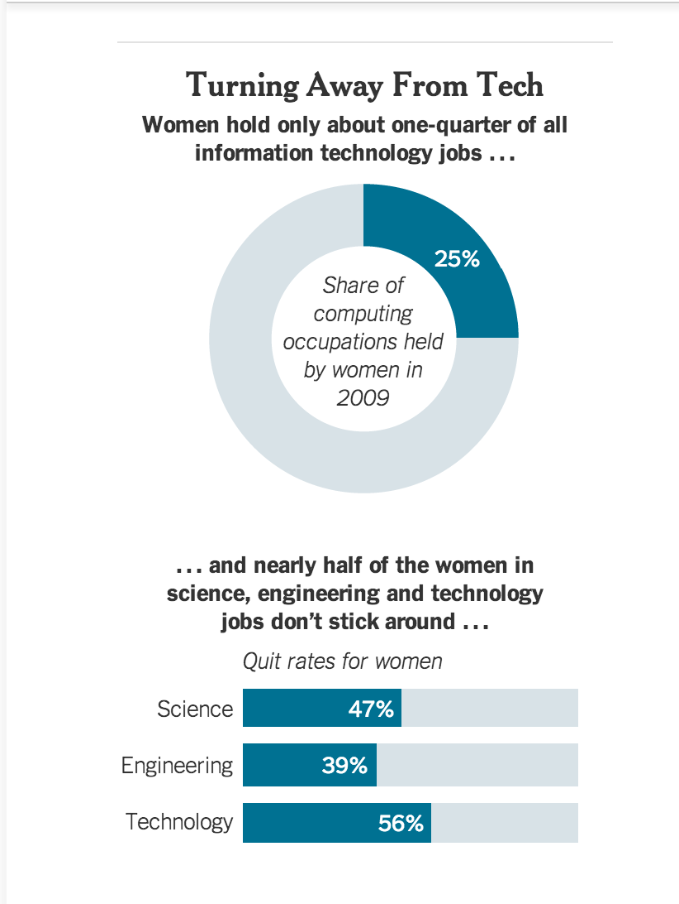

This week, I'll be writing about sexism in the tech community for my cultural blog. After reading this New York Times article, it was clear to me that sexism is a big issue in the tech community.
So what is the issue?
According to the New York Times article, the tech community has a "sexist, alpha-male culture that can make women and other people who don't fit the mold feel unwelcome, demeaned or even endangered". As shown in the image below, women hold only about 25% of information technology jobs, and quit rates are above 50%.
 What can be done to address this issue?
To me, it seems the most logical approach to tackling this issue would be ensuring each tech company has a formal complaint/harassment policy and submission form in place. If a formal system is in place to submit complaints or harassment claims, then the burden to fix this issue will lie on managers and/or whomever else the company decides complaints should be resolved by. This way, if an employee is being harassed, they can formally point to their claim to show they brought the issue to management's attention. If the issue is not fixed, then management is held responsible for the issue. Obviously, this will not completely solve the problem of sexism in the tech community, but it's at least a good starting place.